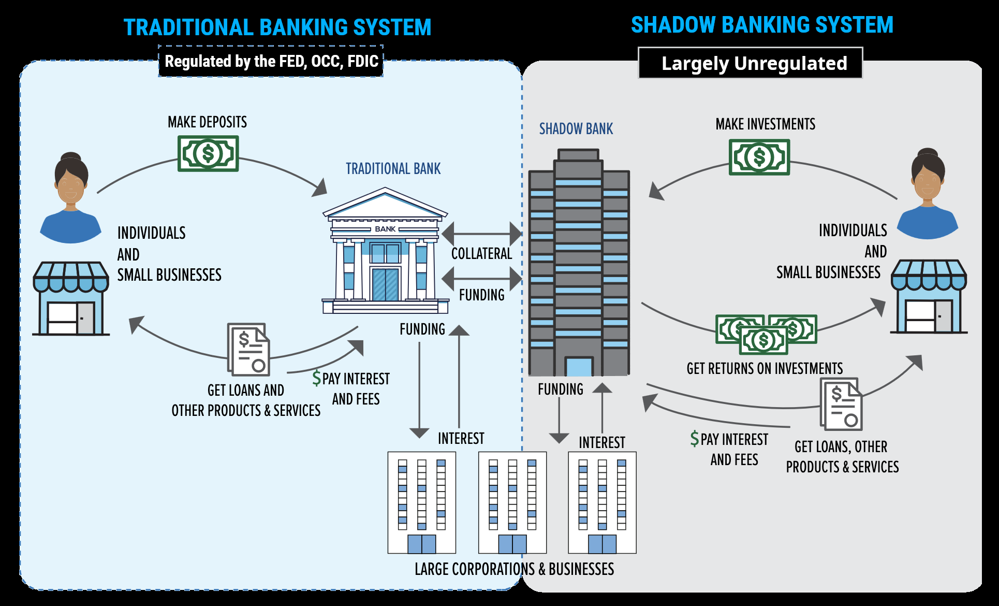

The global financial system currently rests upon a foundation of extreme Liquidity Mismatch, creating a structural risk rooted in the codependency between shadow banks, traditional lenders, and the Treasury market. As of March 2026, major banks hold over $2.5 trillion in exposure to non-bank financial institutions (NBFIs).
Traditional banks act as the primary liquidity providers to these shadow entities; consequently, any volatility in underlying collateral, from A.I. infrastructure to commercial real estate, hits bank balance sheets immediately. This creates a Liquidity Spiral: as shadow banks sell high-quality assets to cover margins, they drive down the value of the very collateral the traditional banks hold, threatening Tier 1 capital buffers.
The true scale of the risk is obscured by a massive data disconnect. While Treasury International Capital (TIC) data fails to capture offshore activity, Federal Reserve research from early 2026 revealed that Cayman-domiciled hedge funds have been underreporting Treasury holdings by nearly $1.4 trillion.
With regulators effectively flying blind, these funds have used 10x to 15x leverage to double down on the Basis Trade, betting on price gaps between bonds and futures, which currently hovers at $1.5 trillion. This mountain of debt is financed through the repo market, where over 70% of trades currently have zero or negative haircuts, meaning there is no cash buffer against price drops.
This instability is tied dangerously to the U.S. Treasury market, fueled by the exorbitant privilege of the U.S. dollar. For decades, the Petrodollar system acted as the global anchor: oil-producing nations recycled profits back into Treasuries in exchange for military protection, creating a permanent buyer of last resort for U.S. debt.
However, this anchor is beginning to drag. As China and Saudi Arabia roll out the Petroyuan, the locked-up demand for dollars is evaporating. China has already slashed its Treasury holdings to roughly $680 billion, the lowest in 15 years. This shift increases dollar velocity, currency that once sat dormant in central bank vaults is now circulating, fueling inflation and leaving the Treasury market increasingly isolated.
The recklessness of this leverage is best illustrated by the emergence of “phantom assets” in private credit.
These aren’t just corporate failures; they represent the core of the Shadow Banking risk: billions in debt built on a foundation of air, kept “stable” on books through Mark-to-Model accounting and Payment-in-Kind (PIK) interest, which now accounts for 9% of investment income, essentially paying debt with more debt.
This entire leveraged system depends on the Yen Carry Trade. For decades, near-zero rates from the Bank of Japan (BoJ) provided a vacuum for cheap borrowing. But as the BoJ raises rates in 2026 to combat inflation, the “carry” has become a “cost.”
The Domino: This is forcing a global deleveraging fire sale. To cover currency exposure, funds are dumping U.S. Treasuries and tech stocks simultaneously, triggering a global margin call that the Fed cannot print its way out of without destroying the dollar’s value.
Shadow banks turned to these risky maneuvers out of desperation, hoping the A.I. boom would be a get out of jail free card to recoup losses from a mountain of zombie companies kept alive by low rates. However, this A.I. Hail Mary is hitting a wall as oil surges toward $120 a barrel and electricity costs skyrocket. Data centers are energy gluttons, and rising power bills are eating the profit margins intended to pay back lenders, dragging the funds down even faster.
The U.S. Net International Investment Position (NIIP) plummeted to -$27.54 trillion at the end of 2025, with liabilities ($70.49T) now vastly outstripping assets ($42.96T).
This hollowing out is accelerated by a 10.3% effective tariff rate as of early 2026. By effectively taxing its own supply chain, the U.S. has rendered the dollar a less efficient medium of exchange for allies like Canada, whose trade share with the U.S. has hit a non-pandemic low of 67.3%. As allies diversify into regional currencies (and the Petroyuan), they no longer need to hold ballast in U.S. Treasuries, leaving the deficit-funding market increasingly isolated.
The underlying economic picture is a vacuum where growth is fake and debt is real. Half of the 2025 GDP gain came from healthcare and software, even as the professional services sector shed 173,000 jobs. This masks a household Empty Tank that makes 2026 fundamentally more dangerous than 2008 or 2020.
| Metric | 2008 (GFC) | 2020 (Pandemic) | 2026 (Current) |
|---|---|---|---|
| Primary Buffer | Home Equity | $5T Federal Stimulus | Credit Card Leverage |
| Savings Rate | ~3.5% (Pre-Crash) | 31.8% (Peak) | 4.5% (Record Low) |
| Total Card Debt | $860 Billion | $770 Billion (Low) | $1.28 Trillion |
In 2008, the bottom 50% held a small but tangible slice of wealth; by 2026, they hold only 2.5% of total U.S. wealth. Unlike 2020, there is no $5 trillion safety net coming. Instead, the Double Squeeze has arrived: new 2026 tariffs have pushed the effective tax per household up by an estimated $600 to $1,000 annually, just as interest rates reset on the debt used to survive the last three years. The economy is no longer just slowing; it is a vacuum where the exit doors are locked for the banks and the oxygen has run out for the people.
Thank you for listening to my TED Talk.

| Term | Brief Explanation |
|---|---|
| Shadow Banking | Financial intermediaries (like hedge funds or private equity) that provide bank-like services but are not subject to the same strict regulations as traditional banks. |
| Leverage | Using borrowed money to increase the potential return of an investment. It acts as a magnifier: it makes gains bigger, but it makes losses catastrophic. |
| Basis Trade | A complex strategy where a fund bets on the tiny price difference between a government bond and its “future” contract. To make a profit, they must borrow massive amounts of money. |
| Repo Market | Short for “Repurchase Agreement.” It is the “plumbing” of the financial system where institutions eat, sleep, and breathe by lending cash for very short periods (often overnight) in exchange for collateral like Treasuries. |
| Haircut | The “safety buffer” in a loan. If you borrow $100 using a $100 bond as collateral, and the lender only gives you $95, the $5 difference is the “haircut.” A “zero haircut” means there is no safety buffer. |
| Rehypothecation | When a bank takes the collateral you gave them for a loan and uses it as their own collateral to get a second loan from someone else. It creates a chain of debt tied to one single asset. |
| Term | Brief Explanation |
|---|---|
| Carry Trade (Yen) | Borrowing money in a country with very low interest rates (like Japan) to invest it in a country with higher returns (like the US). If Japan raises rates, the “cheap” money disappears, forcing investors to sell everything to pay back the loan. |
| Petrodollar / Petroyuan | The global practice of pricing and trading oil in US Dollars. If countries switch to the Chinese Yuan (Petroyuan), the global demand for the US Dollar drops significantly. |
| Exorbitant Privilege | A term describing the unique benefit the US has because the Dollar is the world’s primary reserve currency, allowing the US to run huge debts that other countries cannot. |
| Yield Mismatch | When the interest rate (return) on an investment doesn’t align with the risk or the inflation rate, causing investors to move their money elsewhere. |
| Margin Call | A demand from a lender for an investor to deposit more money or securities to cover possible losses. If the investor can’t pay, the lender forcibly sells their assets. |
| Term | Brief Explanation |
|---|---|
| Maturity Wall | A specific point in time when a massive amount of corporate loans are due to be paid back or renegotiated. If interest rates have risen since the loan was first taken, many companies go bust. |
| Mark-to-Model | A way of valuing assets based on mathematical “assumptions” rather than the actual price someone would pay today. It allows companies to pretend an asset is worth 100% even if it’s failing. |
| Gating | When an investment fund (like a real estate fund) prevents investors from withdrawing their money to stop a “run on the bank.” |
| Payment-in-Kind (PIK) | A “buy now, pay later” for interest. Instead of paying interest in cash, the company just adds the interest to the total amount they owe. This is often a sign of a “Zombie Company.” |
| Zombie Company | A company that earns just enough money to continue operating and service its debt but cannot pay off the debt itself. |
| Term | Brief Explanation |
|---|---|
| Net International Investment Position (NIIP) | The gap between what a country owns abroad and what foreigners own within that country. A deeply negative NIIP (like -$27.6T) means the country is a massive net debtor to the rest of the world. |
| Dollar Velocity | The frequency at which a single dollar is spent on goods and services. High velocity can lead to inflation because more money is chasing the same amount of goods. |
| Liquidity | How quickly and easily you can turn an asset into cash without losing a significant amount of its value. |
| Yield | The earnings generated on an investment over a specific period, expressed as a percentage of the investment’s cost or current market value. |
| Valuation | The process of determining what a company is actually worth. |